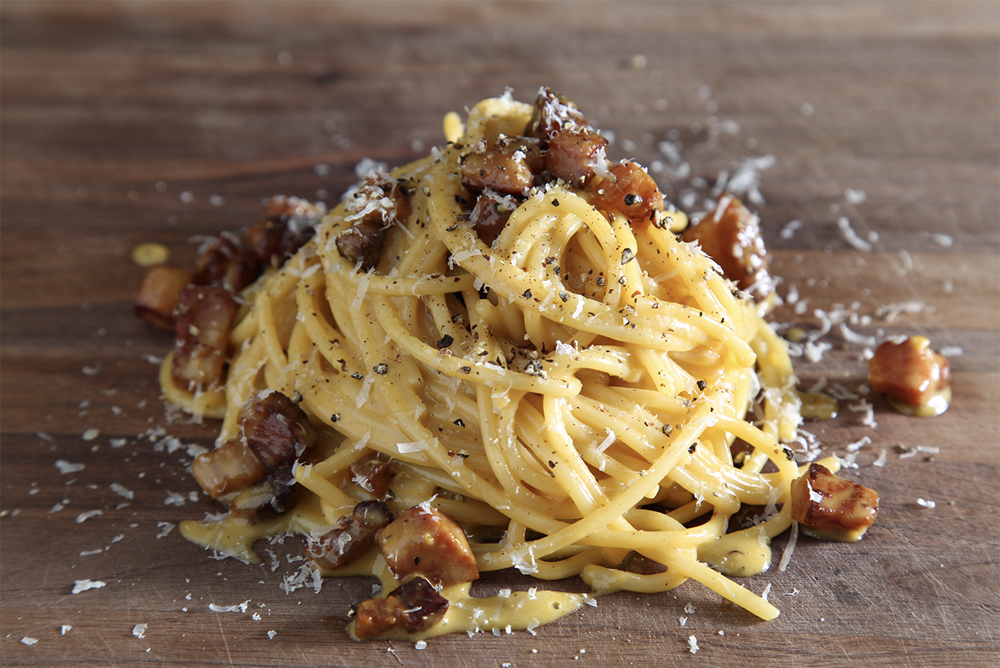

Spaghetti alla Carbonara

Description
There is a chef in Rome who developed a brilliant technique for cooking Spaghetti alla Carbonara. His name is Luciano Monosilio and he is known as, “The King of Carbonara”. I studied his technique, translated and adapted his recipe so that we can enjoy perfect carbonara without any hassle. This is one of my new favorite cooking techniques for pasta, I believe it's as close to fool-proof as a traditional Italian pasta can be. Here's how to make it.
Ingredients
- 1/2 Pound Spaghetti, good quality with visible texture to the pasta (an indication of starch)
- 1/4 Cup Pecorino
- 1/2 Cup Parm, plus more for garnish
- 1 1/2 Tablespoons Fresh Cracked Black pepper
- 4 egg yolks
- 1/2 Pound Pancetta/Guanciale, cut into thick cubes
- 4 Tablespoon of Rendered Pancetta/Guanciale Fat
- Reserved Pasta Water
- One Big Pinch of Salt (for pasta water)
Steps
- Cook the pork in olive oil until browned and crispy, then drain on paper towels.
- Boil the spaghetti in salted water. Drain and return to the pot. Let cool.
- Whisk the eggs, 1/2 of the cheese, and some pepper in a bowl until smooth.
- Pour the egg mixture over the pasta, stirring quickly, until creamy.
- Stir in the pork, then top with the remaining cheese and more black pepper.